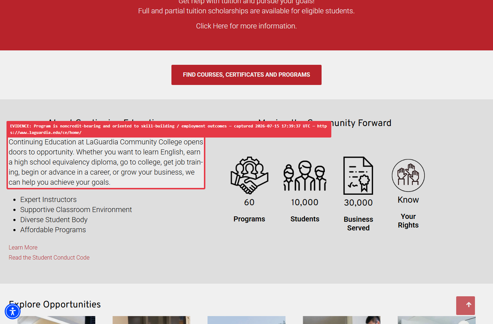
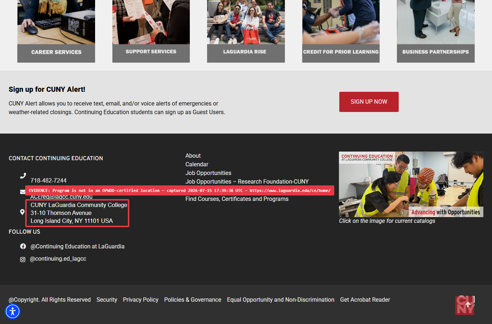
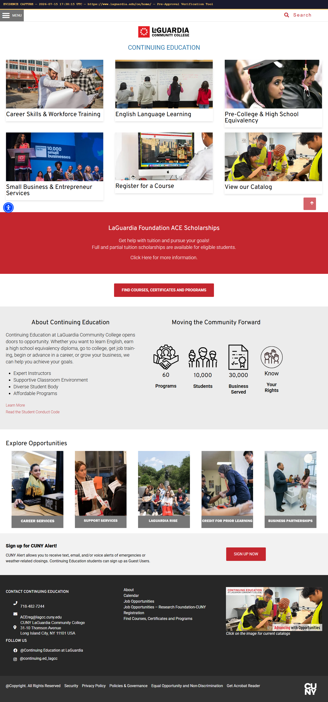
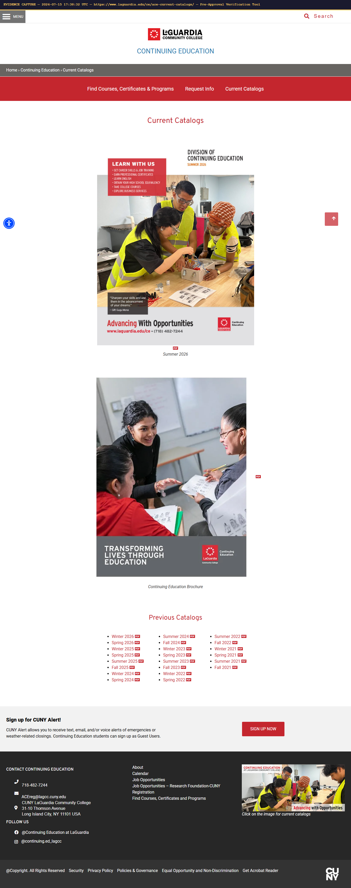
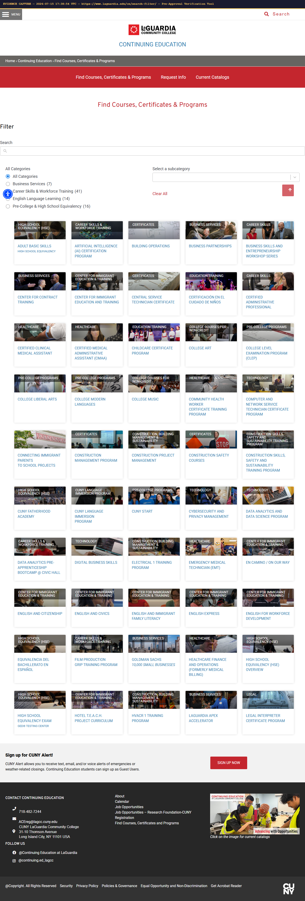
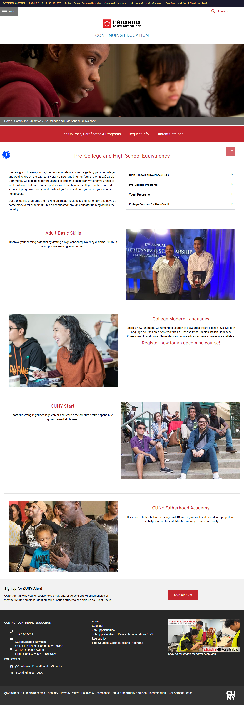

| Participant | Baruch Z. (age 21) |
| Provider / vendor | LaGuardia Community College - Adult & Continuing Education |
| Requested | Transition program |
| Website reviewed | https://www.laguardia.edu/ace/ |
| Category / checklist | Transition Program |
| Fee stated on form | $300 per course |
| Review date | 2026-07-15 17:39:39 UTC |
| FI coordinator / broker | Leah Stern / Sarah Klein |
| Rate on application | $300 per course |
| Rate found on website | not published |
| Verdict | not published |
| Note | The website does not provide specific pricing for courses or programs, making it impossible to compare with the stated fee of $300 per course on the application form. |
| Status | Finding | Targeted evidence |
|---|---|---|
| Needs Review quote unverified |
Published fees exist
The website lists various programs and courses but does not publish specific fees or tuition costs for them. It mentions "Affordable Programs" and scholarships but no concrete pricing information is available. [Auto-downgraded to Needs Review: the supporting quote could not be verified verbatim in the captured page text.]
|
no targeted capture |
| Needs Review | Fees are within caps ($350/course, $800/month)
The website does not publish specific fees for courses or programs, so it is not possible to verify if published fees are within the stated caps. The fee on the form ($300 per course) is within the $350 per course cap.
|
no targeted capture |
| Match/Pass | Program is noncredit-bearing and oriented to skill-building / employment outcomes
The "Continuing Education" division focuses on "Career Skills & Workforce Training" and explicitly offers "College Courses for Non-Credit", indicating a clear orientation towards skill-building and employment outcomes.
“Continuing Education at LaGuardia Community College opens doors to opportunity. Whether you want to learn English, earn a high school equivalency diploma, go to college, get job training, begin or advance in a career, or grow your business, we can help you achieve your goals.” Capture: 2026-07-15T17:39:37.339Z
|
 |
| Match/Pass | Program is not in an OPWDD-certified location
The program is offered at CUNY LaGuardia Community College, which is a public community college and not an OPWDD-certified location.
“CUNY LaGuardia Community College 31-10 Thomson Avenue Long Island City, NY 11101 USA” Capture: 2026-07-15T17:39:38.440Z
|
 |
| Needs Review | Staff background-screening (needs document, not website)
Needs document: this item is proven by a provider letter, not the website. This check requires a separate background-screening letter from the provider, which is not available on the website.
|
no targeted capture |
| Needs Review | Published fee matches the fee stated on the form
The website does not publish specific fees for courses or programs, so a direct comparison to the stated fee of $300 per course on the application form cannot be made.
|
no targeted capture |
These items depend on internal data (budget, Life Plan, other funded services). The tool does not guess them; the answers shown are what the form says.
| Valued outcome (from Life Plan) | Baruch will build vocational and workplace-readiness skills toward competitive employment. |
| Life-Plan date | 02/21/2026 |
| Status | Form question | Answer on form |
|---|---|---|
| Internal | Is the Transition program currently approved in the budget? | YES |
| Internal | Has the individual already completed their educational program? | YES |
| Internal | Does the program have published fees? | YES |
| Internal | Is the program a noncredit-bearing transition program? | YES |
| Internal | Does the coursework address the individual's valued outcome? | YES |
| Internal | Does the coursework address skill-building and employment outcomes? | YES |
| Internal | Are all staff/volunteers/trainers screened for criminal background & excluded-provider status? (letter) | YES |
| Internal | Can the program be funded by ACCES-VR, IDEA, or any other source? | YES |
Each capture carries a burned-in banner with the capture date/time (UTC) and the URL, as required for the audit file.



